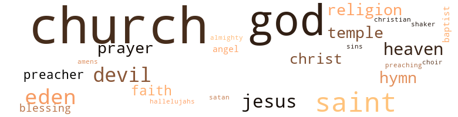

Tambourines to Glory, by Hughes, Langston (1958)
262 music-related terms matched in this text.
Most frequent terms in this topic: tambourine (37); singing (33); sing (31); song (29); chorus (15)
chapter.n.01
Definition: a subdivision of a written work; usually numbered and titled
| word | sentence |
|---|---|
| Chapter | . . . Next text : Leviticus 2-16 , Chapter 2 , verse 16 . |
chorus.n.01
Definition: any utterance produced simultaneously by a group
| word | sentence |
|---|---|
| chorus | " You told me about us maybe doing TV programs with the chorus , and getting our gospel quartet on the air , building them up for a night club act after we get our bigger church . " |
| chorus | We 're gon na get two pianos , one on either side of the stage - rostrum - and everybody in the chorus will have a tambourine . " |
| chorus | They had rented an enormous golden curtain as a background for the chorus . |
| chorus | " Grab the chorus , Essie . |
| chorus | When her mother introduced her to the congregation she had , all alone , begun a chorus of " Rise and Shine and Give God the Glory . " |
| chorus | After this fine chorus that you are going to hear on the air waves of the nation soon , and before I introduce our up-and-coming TV quartet , the Glori-ettas , I got a surprise for everybody , right out of the Book - the Bible . |
| chorus | Then the chorus picked up the words and a hundred voices proclaimed : " God has found , God has found His sheep " So it was that Big-Eyed Buddy became a member of Tambourine Temple . |
| chorus | But the chorus is all upstairs , singing wonderful . |
| chorus | The way that chorus built up the spirit , it was worth the money - even if the director had asked for a salary Laura never dreamed any church would pay a gospel musicianer . |
| chorus | Suppose you set in with the chorus and sing a little . |
| chorus | This just is not my night , Laura thought , wheeling to stare at the little old drummer in the corner above the chorus . |
| chorus | As the massed chorus raised its hardy voices behind her , Laura walked in her scarlet robe with long sleeves flowing toward the steps that led below . |
| chorus | Sensing something wrong , from her place in the chorus , Sister Mattie Morningside came bustling down the iron steps in the room beneath the stage . |
| chorus | A thousand people in the temple , and a hundred in the chorus behind her sang . |
| chorus | Billy Graham will have a gospel chorus and Mahalia Jackson a white manager . |
cornet.n.01
Definition: a brass musical instrument with a brilliant tone; has a narrow tube and a flared bell and is played by means of valves
| word | sentence |
|---|---|
| trumpet | There Birdie Lee had set up her drums along with the guitar , trumpet , and an old man who blowed on a flute , while the two pianos at either side of the stage sometimes drowned them all out , except the drums . |
| trumpet | The two gleaming grand pianos trilled , C.J. 's guitar joined the pianos , Birdie 's drums rolled , the trumpet played a golden note , and four buxom girls came forward shod in golden slippers and mauve robes to sing a song about the glory of touching God 's garment that ended : " There will he a shower of stars ! |
| trumpet | The old man played on his flute , the trumpet blew a golden note , C.J. 's guitar sounded like a thousand strings , the tempo changed and Laura 's voice hit each word hard like a trip hammer : " All through the mountains thunder-riven And up from the rocky steep , Oh , there arose a glad cry to the gates of heaven , Rejoice ! |
| trumpet | Walking in rhythm out from the wings , her scarlet robes swaying , Laura advanced toward the congregation as a thousand hands clapped in time to the music , the tambourines trilled , the drums rolled , and the trumpet gleamed , its notes round and full . |
cymbal.n.01
Definition: a percussion instrument consisting of a concave brass disk; makes a loud crashing sound when hit with a drumstick or when two are struck together
| word | sentence |
|---|---|
| cymbal | " And I thought a cymbal was something on a drum , " said Laura . |
dance.v.03
Definition: skip, leap, or move up and down or sideways
| word | sentence |
|---|---|
| dancing | And it was n't a minute before a dozen folks had gathered there on the corner , the two running kids were dancing to Essie and Laura 's song , and an elderly woman had three times shouted " Amen ! " |
exposition.n.04
Definition: (music) the section of a movement (especially in sonata form) where the major musical themes first occur
| word | sentence |
|---|---|
| exposition | But sometimes Laura would start one of her glass-in-hand talking jags early , before Essie turned in , and it was hard for Essie to be so impolite as to go to bed in the middle of an exposition . |
guitar.n.01
Definition: a stringed instrument usually having six strings; played by strumming or plucking
| word | sentence |
|---|---|
| guitar | " Oh , God , I hope C.J. do n't bring that guitar of his ! |
| guitar | STEAK FOR DINNER The bell rang , but it was C.J. at the door , and he did have his guitar . |
| guitar | There Birdie Lee had set up her drums along with the guitar , trumpet , and an old man who blowed on a flute , while the two pianos at either side of the stage sometimes drowned them all out , except the drums . |
| guitar | C.J. played a nice gospel guitar . |
| guitar | " First year college at City , " said C.J. " Can I look at your guitar , kid ? " asked Buddy . |
| guitar | " Just advice , that 's all , " said Buddy 's the first eight bars of a down-home stomp rolled off the guitar strings . |
| guitar | With a belly chord , Buddy tossed the guitar to C.J. " Here , kid , you can play the kind of stuff the Sisters like . |
| guitar | " On the guitar ? " asked Marietta . |
| guitar | " No , not on the guitar . " |
| guitar | The two gleaming grand pianos trilled , C.J. 's guitar joined the pianos , Birdie 's drums rolled , the trumpet played a golden note , and four buxom girls came forward shod in golden slippers and mauve robes to sing a song about the glory of touching God 's garment that ended : " There will he a shower of stars ! |
| guitar | The old man played on his flute , the trumpet blew a golden note , C.J. 's guitar sounded like a thousand strings , the tempo changed and Laura 's voice hit each word hard like a trip hammer : " All through the mountains thunder-riven And up from the rocky steep , Oh , there arose a glad cry to the gates of heaven , Rejoice ! |
| guitar | Come on , C.J. " Marietta pulled him and his guitar toward the stairs . |
| guitar | Hit your guitar , son ! |
hymn.n.01
Definition: a song of praise (to God or to a saint or to a nation)
| word | sentence |
|---|---|
| hymns | You just give out some holy hymns from the pulpit , or Bible texts with three numbers , that 's all , and let the folks write the numbers down . |
| hymns | Hundreds of Harlem saints took down the numbers of his hymns - Lucky Hymns - every Sunday and played them all week long . |
| Hymns | Hundreds of Harlem saints took down the numbers of his hymns - Lucky Hymns - every Sunday and played them all week long . |
| hymns | " If that minister had lucky hymns , I could have texts - Lucky Texts . " |
| hymn | Why do n't you raise a hymn , Essie , while I go back and make myself a pot of coffee . |
| hymn | The hymn she chose for Buddy 's cue to salvation was " The Ninety and Nine . " |
| hymns | " Leastwise , that 's what you said , we raise our hymns . |
jive.v.01
Definition: dance to jive music; dance the jive
| word | sentence |
|---|---|
| jive | My mother could jive a man back , make him run and butt his head against the wall , lay down his month 's salary at her feet , then beg her for a nickel . " |
music.n.01
Definition: an artistic form of auditory communication incorporating instrumental or vocal tones in a structured and continuous manner
| word | sentence |
|---|---|
| music | The last thing I want to hear is gospel music on my night off . |
| music | But we do n't need no music now , boys , nohow . |
| music | The Tambourine Choir filled the new church with music , and Marietta became a part of the singing . |
| music | " Now a little holy music . |
| music | Laura took a few syncopated steps to the music rollicking down from above . |
| music | Upstairs the music mounted and Laura knew that soon the congregation would be ready to give her a shouting welcome . |
| music | Back to the fold , His love alone is reair Essie came in and paused at the foot of the iron stairs to drink in the music . |
| music | " You and C.J. both should 've been up there making music at eight o'clock like the others . " |
| music | From the pocket of Essie 's coat Laura took her purse , looked down at Buddy motionless on the floor , then ascended to the altar where the music swirled . |
| music | Walking in rhythm out from the wings , her scarlet robes swaying , Laura advanced toward the congregation as a thousand hands clapped in time to the music , the tambourines trilled , the drums rolled , and the trumpet gleamed , its notes round and full . |
| music | Essie 's voice rose in happy song while Laura 's tambourine trembled and shook in rhythm , and the words and the music spread to the crowd . |
| music | The music pulled Essie out of her trance . |
| music | " You better help yourself first , " passing the Lido Bar where the music 's coming out . |
| music | " No , but her music 's a different thing . |
musical_instrument.n.01
Definition: any of various devices or contrivances that can be used to produce musical tones or sounds
| word | sentence |
|---|---|
| instruments | All the instruments and voices had supported her and the whole church sang too , along with the singing in Essie 's heart that her daughter had come to her at last . |
| instrument | Soon the bottom of the instrument was covered , then they did n't bounce any more , they clinked . |
| instrument | When she had finished her song and Laura snatched the tambourine out of her hand and started to take up collection , money showered into the instrument . |
phrase.n.02
Definition: a short musical passage
| word | sentence |
|---|---|
| phrases | The rhythm of Laura 's phrases and the magic of the numbers , the 3 , the 11 , and the 7 to top them all , caused many among the crowd to cry aloud " Thank you , Sister Laura ! |
piano.n.01
Definition: a keyboard instrument that is played by depressing keys that cause hammers to strike tuned strings and produce sounds
| word | sentence |
|---|---|
| pianos | We 're gon na get two pianos , one on either side of the stage - rostrum - and everybody in the chorus will have a tambourine . " |
| piano | " You look sharp upon that stage , too , sugar - just like a grand piano , as I told you before - full front , streamlined rear . " |
| pianos | There Birdie Lee had set up her drums along with the guitar , trumpet , and an old man who blowed on a flute , while the two pianos at either side of the stage sometimes drowned them all out , except the drums . |
| pianos | The two gleaming grand pianos trilled , C.J. 's guitar joined the pianos , Birdie 's drums rolled , the trumpet played a golden note , and four buxom girls came forward shod in golden slippers and mauve robes to sing a song about the glory of touching God 's garment that ended : " There will he a shower of stars ! |
| pianos | The two gleaming grand pianos trilled , C.J. 's guitar joined the pianos , Birdie 's drums rolled , the trumpet played a golden note , and four buxom girls came forward shod in golden slippers and mauve robes to sing a song about the glory of touching God 's garment that ended : " There will he a shower of stars ! |
| pianos | Only the two pianos played softly , very softly , behind her . |
| pianos | The orchestra was not to play , only the soft , soft , sad , sweet pianos . |
| piano | It was the first service they had ever held with a piano , too , and the young man who played had a rhythm and a roll that sent waves of jubilant sound rippling up and down the aisles between the folding chairs and bouncing off the walls and ceiling . |
| piano | Shaking hands and dancing feet laced the rhythm into a net of ecstasy while the piano bassed its chords of confirmation . |
rhythm.n.04
Definition: the arrangement of spoken words alternating stressed and unstressed elements
| word | sentence |
|---|---|
| rhythm | The rhythm of Laura 's phrases and the magic of the numbers , the 3 , the 11 , and the 7 to top them all , caused many among the crowd to cry aloud " Thank you , Sister Laura ! |
| rhythms | They like color , glitter , something to look at along with these fine rhythms were putting down . |
| rhythm | Walking in rhythm out from the wings , her scarlet robes swaying , Laura advanced toward the congregation as a thousand hands clapped in time to the music , the tambourines trilled , the drums rolled , and the trumpet gleamed , its notes round and full . |
| rhythm | Essie 's voice rose in happy song while Laura 's tambourine trembled and shook in rhythm , and the words and the music spread to the crowd . |
| rhythm | Laura lifted her empty tambourine in an ecstatic shimmer to the power of a song , brought it down trilling and spangling , struck it repeatedly in a drumlike rhythm against her elbow , then shouted " Amen ! " |
| rhythm | in perfect rhythm to the song . |
| rhythms | Now , with practice , Laura was beginning to beat a tambourine with rhythms like Cozy Cole 's drums . |
| rhythm | So much rhythm swept up and down the street that some of the passing cars slowed to see what was happening - and it made Laura mad . |
| rhythm | Meanwhile , Essie clapped the rhythm of a song while the corner continued to jump . |
| rhythm | It was the first service they had ever held with a piano , too , and the young man who played had a rhythm and a roll that sent waves of jubilant sound rippling up and down the aisles between the folding chairs and bouncing off the walls and ceiling . |
| rhythm | Shaking hands and dancing feet laced the rhythm into a net of ecstasy while the piano bassed its chords of confirmation . |
rock_'n'_roll.n.01
Definition: a genre of popular music originating in the 1950s; a blend of black rhythm-and-blues with white country-and-western
| word | sentence |
|---|---|
| rock | And a rock and roll band out of this world in front of the pulpit with a piano player that beats Teddy Wilson . |
| rock | I 'm gon na pack a case of Jordan Water upstairs and stand in the wings and listen to your rock and roll . |
sing.v.02
Definition: produce tones with the voice
| word | sentence |
|---|---|
| Sing | Sing one of your pretty songs . |
| sing | Birdie Lee could sing too loud to be a little woman , and the way she played the drums - they had a small combo in the church now - excited the worshipers to a frenzy and took the spotlight - had there been a spotlight - off of Laura . |
| sing | " We got a church full of 'em , " said Laura , " and ai n't but one turned out bad - that boy that used to come damn near every night to sing and pray , then would go off down the street and light a fire in somebody 's house and try to burn them up . |
| sing | " I knowed you could sing blues , Laura , but I never knowed you knew them kind of songs before . " |
| sing | " Essie , if I could sing like you , I 'd be Mahalia Jack-son , " cried Laura . |
| sing | You sing , I 'll preach . |
| sing | When I open my mouth to sing , it feels just like when I open it for a kiss - so good , like being in bed with Buddy . " |
| sing | " Does your daughter sing ? " |
| sing | Now , sing with me : " When the darkness appears , Precious Lord , linger near . |
| Sing | Sing it , girl , sing ! " |
| sing | Sing it , girl , sing ! " |
| sang | All the instruments and voices had supported her and the whole church sang too , along with the singing in Essie 's heart that her daughter had come to her at last . |
| sing | The two gleaming grand pianos trilled , C.J. 's guitar joined the pianos , Birdie 's drums rolled , the trumpet played a golden note , and four buxom girls came forward shod in golden slippers and mauve robes to sing a song about the glory of touching God 's garment that ended : " There will he a shower of stars ! |
| sing | You sing and pray , Sister , and I will arrange the show . " |
| sang | " There were ninety and nine that safely lay In the shelter of the fold . . . " Laura never looked prettier nor sang better than she did that Wednesday night as the services drew near the close . |
| sang | Laura had expressly commanded Birdie Lee not to hit a tap as she sang . |
| sing | " And do n't sing with me ! " |
| singing | There were almost a thousand people in the church , but Laura was singing to Buddy . |
| sang | But as she sang , somehow in spite of herself , tears came . |
| sing | Suppose you set in with the chorus and sing a little . |
| sings | The stronger Essie gets in faith , the louder that woman sings and the stouter she sits on the rostrum - and folks just love Essie for just sitting . |
| sing | " She 's no cheap little model - she can sing . |
| singing | But today , she kept seeing in her mind 's eye herself singing to more and more people on a corner , then in a gospel tent , then in a church , and people weeping and shouting and fainting and coming to Jesus because of her songs , and a railroad ticket , yellow and very long , that she was folding and putting into a letter and sending to her daughter in Richmond writing , " Honey , baby , daughter , child , come to your mother , " and she was signing the letter with her own name , Essie . |
| sing | And she began to sing : " Just a closer walk with Thee , Grant it , Jesus , if you please . |
| sing | While I sing , ushers , pass amongst the people with these bottles . |
| sang | Essie , who never stayed on the platform for this performance , rose , bowed her head , and walked off while Laura sang : " Vm going to lay down my soul At the foot of the cross , Yes , and tell my Jesus Just what sin has cost . |
| sing | It had not occurred to Laura that a cracked old voice would sing out behind her without missing a beat on the drums : " I will be a witness for my Lord ! |
| sing | Birdie Lee could sing louder than Laura . |
| sing | And her speech blended into song , the old song that Birdie liked to sing as she picked up her drumsticks and started to drum . |
| singing | If the Tambourine Chorus had not been singing so lustily behind Crow-For-Day , those on the rostrum might have heard a piercing wail of pretended anguish beneath the stage , and Laura 's voice crying , " Essie , you 've killed Buddy ! |
| Sing | " Sing it , girl , " cried Laura , breezing past in the hall to find the Chinese counterman in the Japanese restaurant , her numbers writer , and somebody on the corner to buy her a bottle of wine . |
| singing | Upstairs the church was singing " Get on Board , Little Children " while tambourines shook ecstatically . |
| sang | A thousand people in the temple , and a hundred in the chorus behind her sang . |
| sing | Let my daughter sing . " |
| sang | " An Easter bonnet with a blue ribbon on it , " sang Laura . |
| sing | Young and old , everybody , drop a nickel , dime , quarter in this tambourine as we sing : " What He 's done for me ! |
| Sing | " Sing it , Sister Essie , while I shake and pass this tambourine . " |
| sang | The fifteen or twenty persons on the corner sang , too . |
| sing | Their singing made others stop to look , stop to sing , and as they sang Laura stopped shaking her music-maker to move among them , the tambourine held like a plate , and the very first nickels , dimes , and quarters bounced into it . |
| sang | Their singing made others stop to look , stop to sing , and as they sang Laura stopped shaking her music-maker to move among them , the tambourine held like a plate , and the very first nickels , dimes , and quarters bounced into it . |
| sing | For a few seconds Laura shook her tambourine , then she began to sing : " I got that old-time religion . . . " As Essie joined in , Laura hit her elbow with the tambourine - one-two ! |
| sing | In her mind 's eye she saw the people stopping on that Lenox Avenue corner to listen to her and Laura sing . |
| sing | " You can set whilst I preaches , and you do n't even need to get up to sing less 'n you want to . |
| sing | POINTED QUESTIONS " Who will come and walk with Him , talk with Him , sing with Him ? " |
| sang | She sang and clapped her hands , too . |
| sing | " I 'm gon na join up with this band and sing and shout out here on God 's street this whole blessed summer long , and nobody 's gon na stop me , because - " I want to be in that number When the saints go marching in ! |
| sang | . . . " Sister Birdie Lee shook Laura 's tambourine and sang the song until all of Lenox Avenue seemed like a street of gold leading right up to God 's throne . |
| sang | At his appearance all the Negroes in the crowd sang louder than ever . |
| sing | You sing good . |
| sing | Somebody said that Eve in the picture , at a certain point , even started to open her mouth and sing , and the snake gave a couple of wiggles . |
| sing | And at one place in the Sunday services , maybe because she was thinking about her daughter in the South , Essie was moved to stand and sing all alone " Sometimes I Feel Like a Motherless Child " and people started to cry , and Chicken Crow-For-Day jumped up and said , " I 'm motherless and fatherless , too , but right now this minute I know I have found Jesus . " |
| sing | Nobody wants to look at me neither , much , fat as I am , but they like to hear me sing . |
singing.n.01
Definition: the act of singing vocal music
| word | sentence |
|---|---|
| singing | That downtown columnist who had come to Harlem to hear their singing had mentioned Essie and Birdie Lee in the paper , and wrote not a word about Laura . |
| singing | " Church to fill - you gon na need a bigger draw than just singing and praying . |
| singing | In her new role , she felt like singing , and she did . |
| singing | And you , Laura , singing and preaching and praying in church half the night and drinking at home the rest , you are burning your candle at both ends . " |
| singing | They gon na take pictures of our lighted cross and me in my mink coat , me in my car , me singing in the pulpit with a tambourine . |
| singing | " Where the singing is best , " said Essie . |
| singing | Essie made him welcome , for C.J. was one of the nice young men in their gospel choir , or rather in the singing band at one side of the rostrum that accompanied the choir . |
| singing | The Tambourine Choir filled the new church with music , and Marietta became a part of the singing . |
| singing | All the instruments and voices had supported her and the whole church sang too , along with the singing in Essie 's heart that her daughter had come to her at last . |
| singing | As Marietta took her seat in the banked choir loft and the singing died down and Essie sat fanning in her big red chair , Laura stepped forward and thanked God for Essie , Marietta , and the Tambourine Chorus . |
| singing | " I sure wish I had me some more wine , " sighed Laura when they had finished singing . |
| singing | Let me introduce to you for another happy time our singing pride , our Temple 's fine young women , the Four Gloriettas . " |
| singing | In the big room under the stage of Tambourine Temple as the midweek preliminary song service drew toward its close , with the choir singing upstairs , Laura and Essie were robing to make their entrance . |
| singing | Everybody talks about Heaven ai n't going there . . . " " Just listen at that fine singing upstairs , girl ! " |
| singing | Laura pointed to the massed choir on the platform in their singing robes . |
| singing | But the chorus is all upstairs , singing wonderful . |
| singing | She 'll be singing in the Devil 's Graveyard with an everlasting contract . " |
| singing | Upstairs the choir was singing : " God gave the people the rainbow sign - No more water , but fire next time . . . " " Buddy , you do n't have to say things to hurt me , " Laura said . |
| singing | The Tambourine Choir joined with her in the singing , so loud and strong that no one heard the startled scream that suddenly echoed from the room below the stage . |
| singing | Essie found herself eating and singing . |
| singing | Meanwhile some of the other tenement dwellers opened up their doors to listen since it sounded as if there might be a small revival meeting going on in the room , and Essie heard somebody say , " That singing sure sounds good ! " |
| singing | Their singing made others stop to look , stop to sing , and as they sang Laura stopped shaking her music-maker to move among them , the tambourine held like a plate , and the very first nickels , dimes , and quarters bounced into it . |
| singing | Cast your singing bread upon the muddy waters of Harlem this evening , while I pass this tambourine amongst the sinners . " |
| singing | With their backs to the taxis and the passing cars , in the balmy summer air they had conducted a very happy meeting that evening and many voices had joined in their songs - a little unusual for street meetings , where people stopped to listen to singing but seldom joined in . |
| singing | Playing and singing and talking were the only things about their corner that interested Laura , but these were the least that interested Essie . |
| singing | Sure enough , in the midst of their singing that night a cop walked up and asked Laura if they had a license to be out there on that corner . |
| singing | The plainclothes man had the feeling that he might have a singing riot on his hands if he went too far , so he accepted a ten , too . |
| singing | He shouted until Essie finished singing , then the old man took the rostrum and began to testify . |
| singing | Whereupon , Laura came forward with a singing cry , took the convert 's hand , and appealed to the congregation on Crow-For-Day 's behalf : " When you see some sinner Leave iniquity 's dark den And turn his feet toward Canaan , Friends , help him to begin . |
song.n.01
Definition: a short musical composition with words
| word | sentence |
|---|---|
| songs | Sing one of your pretty songs . |
| songs | I loved those songs , ' Precious Lord , Take My Hand . ' |
| songs | " I knowed you could sing blues , Laura , but I never knowed you knew them kind of songs before . " |
| song | Cooler , higher and sweeter than Laura 's , Essie 's voice picked up the song , and the drab cold kitchenette room filled with melody was no longer cold , no longer drab . |
| song | " And I 'm working on some brand-new spiritual riffs out of this world , Sister Essie , for that new song the Tambourine Chorus is trying out tomorrow night . " |
| songs | But them gospel songs sound just like blues to me . " |
| song | The two gleaming grand pianos trilled , C.J. 's guitar joined the pianos , Birdie 's drums rolled , the trumpet played a golden note , and four buxom girls came forward shod in golden slippers and mauve robes to sing a song about the glory of touching God 's garment that ended : " There will he a shower of stars ! |
| song | In the big room under the stage of Tambourine Temple as the midweek preliminary song service drew toward its close , with the choir singing upstairs , Laura and Essie were robing to make their entrance . |
| song | How lonely the song , how lost and lonely , as Laura turned and walked toward the rostrum where the Bernstein Bible shone . |
| song | Upstairs the evening song service had started , " Listen to the lambs all a-cryin - I want to go to heaven when I die . " |
| songs | But today , she kept seeing in her mind 's eye herself singing to more and more people on a corner , then in a gospel tent , then in a church , and people weeping and shouting and fainting and coming to Jesus because of her songs , and a railroad ticket , yellow and very long , that she was folding and putting into a letter and sending to her daughter in Richmond writing , " Honey , baby , daughter , child , come to your mother , " and she was signing the letter with her own name , Essie . |
| song | And I ask you with a song : " Who will be a witness for my Lord ? |
| song | And at that moment the spotlight of the spirit fell on Birdie Lee who took the song away from the star . |
| song | And her speech blended into song , the old song that Birdie liked to sing as she picked up her drumsticks and started to drum . |
| song | And her speech blended into song , the old song that Birdie liked to sing as she picked up her drumsticks and started to drum . |
| song | Deacon , come forward , and raise a song . " |
| song | The old melodies came back to Essie in a flood of song as she sat alone in her cell . |
| song | There with her hands on the bars , with the bars between them , stood her partner in song . |
| song | Essie , I 'll come before the bar of justice as poor as I was that night when we left out of that tenement and took our stand for the first time to raise a song on Lenox Avenue . |
| song | " He put a song in my soul today . |
| song | I need some rock on which to stand , Some ground that is not shifting sand . . . Somehow the song kept running through her mind that she had heard so often on a gospel program over the radio from Jersey City . |
| song | The song was beautiful and cool in the room when Laura tapped lightly and tripped on in . |
| song | Laura said , " Well , all right , now ! " and joined in the song until her food got warmed up . |
| song | But it was well past the middle of June before the two women thought it warm enough to go seek a corner on which to lift their voices in song and see if anybody stopped to listen . |
| song | Essie 's voice rose in happy song while Laura 's tambourine trembled and shook in rhythm , and the words and the music spread to the crowd . |
| song | Laura lifted her empty tambourine in an ecstatic shimmer to the power of a song , brought it down trilling and spangling , struck it repeatedly in a drumlike rhythm against her elbow , then shouted " Amen ! " |
| song | Both women led the song to a joyous close , and Laura hissed to Essie , " I think it 's time to stop this meeting , girl . " |
| song | in perfect rhythm to the song . |
| song | And it was n't a minute before a dozen folks had gathered there on the corner , the two running kids were dancing to Essie and Laura 's song , and an elderly woman had three times shouted " Amen ! " |
| songs | With their backs to the taxis and the passing cars , in the balmy summer air they had conducted a very happy meeting that evening and many voices had joined in their songs - a little unusual for street meetings , where people stopped to listen to singing but seldom joined in . |
| songs | Essie and Laura had a way of pulling voices right out of people 's throats and getting them to blend with their own in the old songs of the church that everybody knew , or in the more recent gospel songs folks heard on their radios or records . |
| songs | Essie and Laura had a way of pulling voices right out of people 's throats and getting them to blend with their own in the old songs of the church that everybody knew , or in the more recent gospel songs folks heard on their radios or records . |
| song | Whereupon that little old lady began a song and shook the tambourine - shook it so well that the whole corner started to rock and sway , feet to patting , hands to clapping , and Essie to shouting . |
| song | . . . " Sister Birdie Lee shook Laura 's tambourine and sang the song until all of Lenox Avenue seemed like a street of gold leading right up to God 's throne . |
| song | When she had finished her song and Laura snatched the tambourine out of her hand and started to take up collection , money showered into the instrument . |
| songs | " These gospel songs is about the only thing the white folks ai n't latched onto yet . |
| song | Meanwhile , Essie clapped the rhythm of a song while the corner continued to jump . |
| song | Christians , take his hand , Show him God 's his friend , Just lead him on And say AmenI " The building began to rock to the song . |
swing.n.05
Definition: a style of jazz played by big bands popular in the 1930s; flowing rhythms but less complex than later styles of jazz
| word | sentence |
|---|---|
| jive | " They gon na paint it up , turn the stage into a rostrum , and put our names in big lights outside where it used to say Joan Crawford in The Loves of Passion , or some such jive . |
| jive | Laura said , " You see , girl , I 'm telling you , this religious jive is something we can collect on . |
| jive | Look here , ai n't you got no meat or nothing to go with this rice jive here ? |
tambourine.n.01
Definition: a shallow drum with a single drumhead and with metallic disks in the sides
| word | sentence |
|---|---|
| tambourines | They had six girls now passing tambourines , besides the marching-up collection at the end . |
| tambourine | " And each time you give out a text , pass the tambourine for a quarter , else the players wo n't be lucky the next day . " |
| tambourines | " And I would n't get mine either , " said Laura , " without the tambourines . " |
| tambourine | We 're gon na get two pianos , one on either side of the stage - rostrum - and everybody in the chorus will have a tambourine . " |
| tambourine | They gon na take pictures of our lighted cross and me in my mink coat , me in my car , me singing in the pulpit with a tambourine . |
| tambourines | " God - and your tambourines , " laughed Buddy . |
| tambourine | " Marietta , can you play a tambourine ? " |
| tambourines | For each Lucky Text , members and friends , I want you to drop a quarter - or a dollar for all four - in the tambourines as they pass . |
| tambourines | Now drop a quarter in the tambourines . |
| tambourines | The tambourines were filled with money when the ushers returned to the rostrum . |
| tambourines | For many there living in the tenements of Harlem , to believe in such wonder was worth every penny the tambourines collected . |
| tambourines | I want plenty of Thank Gods tonight , honey , bass chords , drum rolls , tambourines , and hallelujahs from all of you-all . " |
| tambourine | " Well , as soon as the weather warms up a bit , we 'll buy a Bible and a tambourine and plant our feet on the rock of 126th and Lenox and start . |
| tambourines | Besides , I 'm a partner in this deal - from the Holy Water and the Lucky Texts to the tambourines . |
| tambourines | Walking in rhythm out from the wings , her scarlet robes swaying , Laura advanced toward the congregation as a thousand hands clapped in time to the music , the tambourines trilled , the drums rolled , and the trumpet gleamed , its notes round and full . |
| tambourines | Upstairs the church was singing " Get on Board , Little Children " while tambourines shook ecstatically . |
| tambourine | " It 's right here in His holy Word , Essie , how you took me out of the gutter of Lenox Avenue , raised me up to the curbstone of redemption , brought me into your gospel band , and let me shake my tambourine to the glory of God and drum my way to jubilation . |
| tambourine | Oh , if I had just brought my tambourine , I would shake it here in jail to God 's glory , to you , Sister Essie , who by your goodness lifted me up out of the muck and mire of Harlem and put my feet on the rock of grace where I , Birdie Lee , can stand and redeem myself of the lies I once told and the souls sent to hell - this time to testify the truth ! |
| tambourine | All you who helped to make this church , to raise its walls from the curbstone to this rostrum , helped me to buy the first tambourine I ever had in my hand ! |
| tambourines | Shake , tambourines , shake ! |
| tambourine | And , folks - " If you 've got a tambourine , Shake it to the glory of God ! |
| Tambourines | Tambourines to glory ! |
| tambourine | They found at the Good Will Store a tambourine and a folding camp stool , 35c for the latter , and a half dollar for the tambourine . |
| tambourine | They found at the Good Will Store a tambourine and a folding camp stool , 35c for the latter , and a half dollar for the tambourine . |
| tambourine | " Laura , can you play a tambourine ? " |
| tambourine | Young and old , everybody , drop a nickel , dime , quarter in this tambourine as we sing : " What He 's done for me ! |
| tambourine | " Sing it , Sister Essie , while I shake and pass this tambourine . " |
| tambourine | Essie 's voice rose in happy song while Laura 's tambourine trembled and shook in rhythm , and the words and the music spread to the crowd . |
| tambourine | Their singing made others stop to look , stop to sing , and as they sang Laura stopped shaking her music-maker to move among them , the tambourine held like a plate , and the very first nickels , dimes , and quarters bounced into it . |
| tambourine | Laura lifted her empty tambourine in an ecstatic shimmer to the power of a song , brought it down trilling and spangling , struck it repeatedly in a drumlike rhythm against her elbow , then shouted " Amen ! " |
| tambourine | Cast your singing bread upon the muddy waters of Harlem this evening , while I pass this tambourine amongst the sinners . " |
| tambourine | Laura grabbed the secondhand tambourine from the table and started shaking it : Ching-a-ching ! |
| tambourine | Laura lifted up her tambourine and shook it . |
| tambourine | Just the shaking of her tambourine was enough to make a teen-age boy stop , also a middle-aged couple , plus two children who ran past , then ran back and stood watching . |
| tambourine | For a few seconds Laura shook her tambourine , then she began to sing : " I got that old-time religion . . . " As Essie joined in , Laura hit her elbow with the tambourine - one-two ! |
| tambourine | For a few seconds Laura shook her tambourine , then she began to sing : " I got that old-time religion . . . " As Essie joined in , Laura hit her elbow with the tambourine - one-two ! |
| tambourine | " Now , I wonder who in hell put them pennies in that tambourine ? " |
| tambourine | Now , with practice , Laura was beginning to beat a tambourine with rhythms like Cozy Cole 's drums . |
| tambourine | Put a nickel , dime , quarter , dollar in this tambourine . |
| tambourine | Sister Laura , gim me that tambourine and lem me shake it a mite to his glory . " |
| tambourine | Whereupon that little old lady began a song and shook the tambourine - shook it so well that the whole corner started to rock and sway , feet to patting , hands to clapping , and Essie to shouting . |
| tambourine | . . . " Sister Birdie Lee shook Laura 's tambourine and sang the song until all of Lenox Avenue seemed like a street of gold leading right up to God 's throne . |
| tambourine | When she had finished her song and Laura snatched the tambourine out of her hand and started to take up collection , money showered into the instrument . |
| tambourine | This brought a laugh and filled the tambourine with bills from the sporting element . |
| tambourine | " And I do n't see nowhere in the Bible where God tells me not to pass my tambourine . " |
| tambourine | Essie did not miss a note , nor Birdie Lee a handclap , and Laura 's tambourine shook louder than ever as the policeman walked away . |
| tambourines | He also suggested adding ribbons to their tambourines . |
| tambourine | " You have shook your tambourine to blessings , " said Essie . |
| tambourine | " You are doing right well shaking since you bought your own self a tambourine , too . |
| tambourine | I expect she borrowed it to buy herself a tambourine . " |
| tambourine | " Birdie 's trying to tambourine herself up on the rostrum with us , " said Laura , " setting in the front row playing like mad . " |
tune.n.01
Definition: a succession of notes forming a distinctive sequence
| word | sentence |
|---|---|
| melody | Cooler , higher and sweeter than Laura 's , Essie 's voice picked up the song , and the drab cold kitchenette room filled with melody was no longer cold , no longer drab . |
| melodies | The old melodies came back to Essie in a flood of song as she sat alone in her cell . |
warble.v.01
Definition: sing or play with trills, alternating with the half note above or below
| word | sentence |
|---|---|
| trilled | The two gleaming grand pianos trilled , C.J. 's guitar joined the pianos , Birdie 's drums rolled , the trumpet played a golden note , and four buxom girls came forward shod in golden slippers and mauve robes to sing a song about the glory of touching God 's garment that ended : " There will he a shower of stars ! |
| trilled | Walking in rhythm out from the wings , her scarlet robes swaying , Laura advanced toward the congregation as a thousand hands clapped in time to the music , the tambourines trilled , the drums rolled , and the trumpet gleamed , its notes round and full . |
whistle.v.01
Definition: make whistling sounds
| word | sentence |
|---|---|
| whistle | From behind , young boys might whistle , " Whee-ooo-oo-o ! " |
70 violence-related terms matched in this text.
Most frequent terms in this topic: knife (17); killed (6); hate (4); spite (4); set (4)
brain.v.02
Definition: kill by smashing someone's skull
| word | sentence |
|---|---|
| brained | Otherwise , I would have picked one of them posts up and brained that joker that night I run to you . |
bruise.n.01
Definition: an injury that doesn't break the skin but results in some discoloration
| word | sentence |
|---|---|
| bruises | If Laura had not screamed so loudly on the corner , he might have inflicted even more solid punishment on her in places where the bruises would show . |
contemn.v.01
Definition: look down on with disdain
| word | sentence |
|---|---|
| scorned | " How simple can people get , " scorned Buddy , " buying Holy Water from the Jordan at a buck a bottle ! |
craze.n.02
Definition: state of violent mental agitation
| word | sentence |
|---|---|
| frenzy | Birdie Lee could sing too loud to be a little woman , and the way she played the drums - they had a small combo in the church now - excited the worshipers to a frenzy and took the spotlight - had there been a spotlight - off of Laura . |
crucify.v.01
Definition: kill by nailing onto a cross
| word | sentence |
|---|---|
| crucified | Were you there when they crucified my Lord ? |
| crucified | Were you there when they crucified my Lord ? |
draw.v.23
Definition: pull (a person) apart with four horses tied to his extremities, so as to execute him
| word | sentence |
|---|---|
| drew | APPLE OF EVIL When in the dusk-dark of evening Lauras big blade Cadillac drew up to the stage door of the Temple and her new little old black chauffeur jumped spryly out to open the door for her , Laura could hear inside the Tambourine Chorus : " Listen to the lambs all a-cryin . |
fit.n.01
Definition: a display of bad temper
| word | sentence |
|---|---|
| conniption | " Essie would have a conniption fit , " cried Laura . |
gag.v.06
Definition: cause to retch or choke
| word | sentence |
|---|---|
| choked | The words choked in her throat . |
harm.v.01
Definition: cause or do harm to
| word | sentence |
|---|---|
| harm | " Sister , darling , I hope you wo n't mind what I say - but do n't you think maybe money can do harm sometimes ? |
hate.v.01
Definition: dislike intensely; feel antipathy or aversion towards
| word | sentence |
|---|---|
| hate | I would hate to see my Garden of Eden burnt up . " |
| hate | But I hate to be kicked in the street where the lamp-posts is all cemented down . |
| hate | But I sure hate to be so poor ! |
| hated | Buddy had ideas , the Holy Water , them Lucky Texts , ideas for making you and me both rich and happy , but you hated him ! |
| hate | " I hate that old raw wine , Laura . |
infuriate.v.01
Definition: make furious
| word | sentence |
|---|---|
| infuriated | It was the sight of his big nonchalant teasing lips with the white teeth between them that infuriated Laura . |
injury.n.01
Definition: any physical damage to the body caused by violence or accident or fracture etc.
| word | sentence |
|---|---|
| harm | So it would do no harm to have a man around now that we got our church . " |
kick_back.v.02
Definition: spring back, as from a forceful thrust
| word | sentence |
|---|---|
| kicked | What I been through is real - robbed , raped , knocked down , plus being kicked on both haunches by that old Negro that bought me that new dress that time I run to you to hide . |
| kicked | But I hate to be kicked in the street where the lamp-posts is all cemented down . |
| kick | Fact is , he lived to kick my - excuse me , I meant to say , to mistreat me , too . |
kill.v.10
Definition: cause the death of, without intention
| word | sentence |
|---|---|
| killed | If the Tambourine Chorus had not been singing so lustily behind Crow-For-Day , those on the rostrum might have heard a piercing wail of pretended anguish beneath the stage , and Laura 's voice crying , " Essie , you 've killed Buddy ! |
| killed | Essie , you done killed Buddy ! |
| killed | I know you never did like him , now you 've killed him ! |
| killed | You killed my Buddy ! " |
| killed | Essie Johnson killed Buddy . |
| kill | And , Mama , Birdie Lee , Sister Birdie Lee went to the police and told them last night how some hoodlums had already threatened to kill her . |
| killed | Birdie Lee swears Aunt Laura killed Buddy herself just before Laura came upstairs for services . |
| Kill | Kill yourself over that church . |
knife.n.02
Definition: a weapon with a handle and blade with a sharp point
| word | sentence |
|---|---|
| knife | You keep on wearing your old rags if you want to , with that same old-Lenox Avenue knife of yours in that ragged pocket . |
| knife | Suddenly , before Birdie got where she was going , Buddy fell straight forward at Laura 's feet and the startled Birdie saw him sprawled face downward on the floor with the blade of a gleaming white switchblade knife stuck in his back . |
| knife | It 's your knife stuck in his back ! " |
| knife | I 've known your mother longer than you have , and she 's always carried a knife . " |
| knife | Her knife in his back and nobody down here but her . |
| knife | I should have riz in my wrath and cleaned house , Essie thought staring at the walls - which is what I guess is the matter with me all these years , setting - just setting doing nothing but accepting what comes , receiving the Lord 's blessing whilst the eagle foulest His nest , till the sinner gets struck down by somebody else with my own knife in his back . |
| knife | They found fingerprints on that knife - just like Aunt Laura 's . |
| knife | But this morning she girded herself in the strength of the Lord , and got herself a lawyer , and went to the Precinct House and told them that when she ran downstairs to the toilet Sunday night she saw Aunt Laura with her hand at Buddy 's back , and that knife was there , too - in his back . |
| knife | Gangsters or no gangsters , Laura or no Laura , it 's my determination to testify exactly who stuck that knife in Big-Eyed Buddy 's carcass - to take the stand and tell the truth - for the truth do n't lie ! |
| knife | A long pause , then , " Essie , I 'm sorry , " Laura whispered hoarsely , " sorry as hell for what I did to you - and with your knife , too . |
| knife | From the pocket of her coat she took a long pearl-handled knife , pressed a little button in its side and a thin sharp blade shot out . |
| knife | With the blade she began to clean her fingernails - which was about the only use she had ever had for that knife , although Essie carried it in her pocket when she went out , for protection , she said , against robberies and rapes and suchlike calamities . |
| knife | Had any man laid hands on her , " I have my knife , " said Essie , as she used it to clean her fingernails . |
| knife | ' I got the same knife I been had for twenty years . " |
| knife | " I carried a knife . |
| Knives | Knives got me in trouble . |
| knife | Here goes old knife , too . " |
| knife | And out the window went the knife , gone . |
malice.n.01
Definition: feeling a need to see others suffer
| word | sentence |
|---|---|
| spite | Meanwhile , in spite of Buddy , he got acquainted with Marietta . |
| spite | But as she sang , somehow in spite of herself , tears came . |
| spite | In spite of Laura Reed ! |
| spite | In spite of all , you been my friend . |
murder.n.01
Definition: unlawful premeditated killing of a human being by a human being
| word | sentence |
|---|---|
| murder | Now you 've up and committed murder ! |
musket_ball.n.01
Definition: a solid projectile that is shot by a musket
| word | sentence |
|---|---|
| ball | " Well , I was - which is maybe why I 'm what that Ebony man calls a personality - you know , like Eartha Kitt - with that little something extra on the ball . |
pain.v.02
Definition: cause emotional anguish or make miserable
| word | sentence |
|---|---|
| hurt | " A little blues wo n't hurt the Sisters . |
| hurt | Upstairs the choir was singing : " God gave the people the rainbow sign - No more water , but fire next time . . . " " Buddy , you do n't have to say things to hurt me , " Laura said . |
| hurt | Her eyes , that seemed to move so slowly , were studying faces , looking into other eyes , wondering what troubled this woman , what worried that man , what had hurt that young boy 's soul , or made so bitter that girl 's face . |
pistol.n.01
Definition: a firearm that is held and fired with one hand
| word | sentence |
|---|---|
| pistol | I carried a pistol , called it Dog - because when it shot , it barked just like a dog . |
| pistol | I wo n't carry no pistol no more . |
| pistol | Four women fainted and twenty screamed as Crow-For-Day pulled a pistol from his pocket , walked down the aisle with it above his head , and threw it out the open window into the street . |
| Pistol | Pistol out the window , gone . |
resist.v.04
Definition: withstand the force of something
| word | sentence |
|---|---|
| resist | " There 'll be some numbers played tomorrow , " Buddy could not resist crying from his third-row seat . |
riot.n.01
Definition: a public act of violence by an unruly mob
| word | sentence |
|---|---|
| riot | The plainclothes man had the feeling that he might have a singing riot on his hands if he went too far , so he accepted a ten , too . |
shooting.n.02
Definition: killing someone by gunfire
| word | sentence |
|---|---|
| shooting | Stop shooting me in the eyes that way with what you carries in front of you . ' " |
sic.v.01
Definition: urge to attack someone
| word | sentence |
|---|---|
| set | Essie says she wo n't even set on the rostrum while I sell them , so I told her to go mediate in the backroom then while the selling ceremony is going on - it being my rostrum as well as hers . |
| sets | " All you use , like most women , is the what-you-may-call-it that you sets on , your assets instead of your head . |
| set | " No , " said Buddy , " not so bad - because my mouth 's set on steaks anyhow , so I 'll go get 'em . |
| set | Long as I 've known you , you never was inclined to do nothing much - but set on your big fat behind and let the city pay your rent . |
| set | Essie , if I could just set on my haunches and be content like you ! |
wrath.n.01
Definition: intense anger (usually on an epic scale)
| word | sentence |
|---|---|
| wrath | I should have riz in my wrath and cleaned house , Essie thought staring at the walls - which is what I guess is the matter with me all these years , setting - just setting doing nothing but accepting what comes , receiving the Lord 's blessing whilst the eagle foulest His nest , till the sinner gets struck down by somebody else with my own knife in his back . |
| wrath | I let Laura play with God - me , Essie Belle Johnson - when I should have riz in my wrath and cleaned house . |
wrestle.v.01
Definition: combat to overcome an opposing tendency or force
| word | sentence |
|---|---|
| wrestles | " I wrestles with temptation , too , Laura , in my heart . |
303 religion-related terms matched in this text.
Most frequent terms in this topic: church (105); God (75); saint (12); Eden (12); Jesus (9)
amen.n.01
Definition: a primeval Egyptian personification of air and breath; worshipped especially at Thebes
| word | sentence |
|---|---|
| Amens | When the turnkey brought Birdie Lee down through the aisle of cells she began to shout Hallelujahs even before she saw Essie , and Bless Gods and Amens . |
baptist.n.01
Definition: follower of Baptistic doctrines
| word | sentence |
|---|---|
| Baptist | High on hard likker when I was ten , converted Baptist and half drowned at baptism when I was twelve , married when 1 was sixteen , divorced when I was twenty , then married again by twenty-one to a simple old Negro who wanted to take care of me . |
| Baptist | " Which one , Sanctified or Baptist ? " |
blessing.n.05
Definition: the act of praying for divine protection
| word | sentence |
|---|---|
| blessing | As for blessing it , Essie said she hoped the Lord would strike me dead if I blessed such low deceit . |
| blessing | I should have riz in my wrath and cleaned house , Essie thought staring at the walls - which is what I guess is the matter with me all these years , setting - just setting doing nothing but accepting what comes , receiving the Lord 's blessing whilst the eagle foulest His nest , till the sinner gets struck down by somebody else with my own knife in his back . |
| blessings | " You have shook your tambourine to blessings , " said Essie . |
choir.n.03
Definition: the area occupied by singers; the part of the chancel between sanctuary and nave
| word | sentence |
|---|---|
| choir | As Marietta took her seat in the banked choir loft and the singing died down and Essie sat fanning in her big red chair , Laura stepped forward and thanked God for Essie , Marietta , and the Tambourine Chorus . |
christian.n.01
Definition: a religious person who believes Jesus is the Christ and who is a member of a Christian denomination
| word | sentence |
|---|---|
| Christian | She found herself suddenly wishing that she , too , were like Essie seated in the red chair behind her - truly a Christian . |
church.n.02
Definition: a place for public (especially Christian) worship
| word | sentence |
|---|---|
| church | Several of the other kitchenette dwellers in her lodgings had been to church that day and returned with leaves , sheaves and even large sprays of palm straw to stick up in their mirrors or in one corner of the frame of Mama 's picture . |
| church | " Bishop Lawson 's sure got a great big church , " said Laura looking out the double windows before coming back to bed . |
| church | " Marty knows about your church , " said Buddy . |
| church | Their two-parlor church grew until so many people wanted to attend that it could no longer hold them all and when the new young leaves were coming out in the spring , Essie found herself standing at a window high up on the ninth floor of a brand-new apartment house looking out over the prettiest edge of Harlem . |
| church | Then I went to church at night , too . |
| church | Birdie Lee could sing too loud to be a little woman , and the way she played the drums - they had a small combo in the church now - excited the worshipers to a frenzy and took the spotlight - had there been a spotlight - off of Laura . |
| church | So I got all them bottles corked up in my room , ready for you to take over to the church , case by case , as we need them . |
| church | " You told me about us maybe doing TV programs with the chorus , and getting our gospel quartet on the air , building them up for a night club act after we get our bigger church . " |
| church | " We ca n't write no numbers in the church . " |
| church | Say , Essie , why do n't you and me start a church like Mother Bradley 's ? |
| church | STRAY CATS , STRAY DOGS " Into my church , yes . |
| church | " We got a church full of 'em , " said Laura , " and ai n't but one turned out bad - that boy that used to come damn near every night to sing and pray , then would go off down the street and light a fire in somebody 's house and try to burn them up . |
| church | GOD 'S MARQUEE " Not quite a year , " said Laura , dusting off the Bible preparatory to evening services , " and already we got a little church and a big apartment . |
| church | Soon we gon na have a big church . |
| church | . . . " On the day when they moved their church into the renovated theatre , as soon as their numerous members got off from work almost everybody turned out to help , and Deacon Crow-For-Day carried the Bible . |
| church | " Sweet daddy , I 'd kiss you if we was n't in front of the church . " |
| church | And you , Laura , singing and preaching and praying in church half the night and drinking at home the rest , you are burning your candle at both ends . " |
| church | " Because he says you and me 've got the biggest independent church in Harlem - not belonging to no denomination but our own . |
| church | I can tell 'em in church so well that even you believe me , Essie , and get to shouting up there in the pulpit . |
| church | They all had come originally from the South - Essie , Laura , Buddy , plus just about everybody else in their church , too . |
| church | But I 'm going to bed early so 's to be fresh for church tomorrow - I love that big funny old theatre we moved into ! " |
| church | But just wait until you see our new church tomorrow . |
| church | Shyly , " I used to try sometimes in church down home . " |
| church | " You 're reading a mighty lot lately " - Laura pointed to the pile of books on the table - " which is strangely for you , who never even read the Bible till we started this church . |
| church | " It takes money to run a good church , too . |
| church | I can analyze that Holy Water Sister Laura dispenses in church . |
| church | " But you know I ai n't got nothing to wear to church . |
| church | The Tambourine Choir filled the new church with music , and Marietta became a part of the singing . |
| church | That night , taking advantage of the wave of wonder in the church , Laura chose to introduce the Lucky Texts of which Essie had no inkling . |
| church | You 've done better than you know - God is in this church . " |
| church | " You 're around the church so much these days , officiating and helping me , " said Laura to Buddy as they drove through Central Park one afternoon , " that lots of saints are wondering how come you do n't belong to our church - how come you 're not converted ? " |
| church | " That church we gon na start , " said Essie . |
| church | " I used to always go to church on Palm Sunday when I were a child , " Essie said , " as well as Easter , too . " |
| church | There were almost a thousand people in the church , but Laura was singing to Buddy . |
| church | Sobs broke out in the old rat-trap of a theatre - ' church and Deacon Crow-For-Day cried , " I once stood in the wilderness , too . |
| church | " Oh , you talking about starting a church ? " said Laura , her mind clearing of sleep a little . |
| church | " I need ten dollars for a couple of Scotches , baby , on my way to church . |
| church | They saw each other every night but Saturday at the church . |
| church | Them white gangsters . . . " " Marty and them ' gangsters ' as you call 'em , squared the violations on this church . |
| church | But you , you put all your money except what you live on , back into this church , like a fool . |
| church | But today , she kept seeing in her mind 's eye herself singing to more and more people on a corner , then in a gospel tent , then in a church , and people weeping and shouting and fainting and coming to Jesus because of her songs , and a railroad ticket , yellow and very long , that she was folding and putting into a letter and sending to her daughter in Richmond writing , " Honey , baby , daughter , child , come to your mother , " and she was signing the letter with her own name , Essie . |
| church | Since I been functioning in this church , look how many more young girl members you got - just on account of me and my presence . |
| church | " Thank Him for His son , for the Holy Ghost , for Sister Essie , for the Tambourine Chorus , the Gloriettas , and for this great church here tonight . |
| church | Laura rose and addressed the church . |
| church | Upstairs the church was singing " Get on Board , Little Children " while tambourines shook ecstatically . |
| church | I got my child to live for , I got my daughter , and I got my church . " |
| church | All you who helped to make this church , to raise its walls from the curbstone to this rostrum , helped me to buy the first tambourine I ever had in my hand ! |
| church | And now , folks , another announcement , my earthly aid from this day on , my staff of youth in this church and in this pulpit , is my daughter , Marietta ! |
| church | She 's going to study next fall at the Lincoln Hospital to be a nurse so she can help me take care of the sick in this church . |
| church | " It 's wonderful to be in love with God , " the girl said , " and with this church , with you-all before me , and C.J. " Essie beckoned C.J. forward to join hands with Marietta . |
| church | She must be a church girl , thought Essie , because them people are religious down South . |
| church | My mother was too beat out from Saturday night to get me up in time to go to church . |
| church | When we get our own church , we gon na do just like we want to do . " |
| church | Birdie Lee went and stood beside Essie on the curb and became a part of their church . |
| church | " There will be no assignations in this church , " said Essie flatly . |
| church | " The Lord is the caretaker of this church , " said Essie . |
| church | " Thank God it ai n't no little old store-front church neither , " said Essie . |
| church | DYED-IN-THE-WOOL The first convert in the new church was a man , a real sinner , too , not just a backslider returning to the fold . |
| church | It was their first Sunday night in the new church . |
| church | So many people in the church shouted simultaneously that you could hardly hear Crow-For-Day . |
| church | By then Crow-For-Day had come back up the aisle to the front of the church and turned to reveal still more of his sinful past to the congregation . |
| church | " Let the church say Amen ! |
| church | Let the church say Amen ! |
| church | When a sinner comes to Jesus Let the church say Amen ! " |
| church | " Looks like you could choose a new man out of the church . " |
| church | Negroes do n't play around with the church much . |
| church | She 'd give me a nickel to put in Sunday school and a dime for church , then leave something in the pot for me to eat when I got back home . |
| church | " But you wo n't catch me lending no money to nobody in the church , like you did Sister Birdie Lee last week . |
| church | You are the rose of this church . " |
| church | Kill yourself over that church . |
| church | " I saw you on the curb before you moved off the street into this church , and you certainly looked good to me . " |
church.n.04
Definition: the body of people who attend or belong to a particular local church
| word | sentence |
|---|---|
| church | They paid cash for the furniture , all the fine new furniture , and it only took two weeks ' collections at church . |
| Church | " Church to fill - you gon na need a bigger draw than just singing and praying . |
| church | From then on , your church will be packed , believe me , baby / ' " Big-Eyed Buddy , boy , you got an idea , " said Laura kissing him square on the lips as his cigarette in his enormous hand hung over the side of the bed . |
| church | " Baby , that 'll add a few more hundreds regular to the bank account every week - and the government ca n't tax no church income . " |
| church | If he 's so interested in our church , why do n't he get religion ? " |
| church | Thank God , he never lit no fire in our church before they caught him . |
| church | We gon na call it the Tambourine Chorus , and our church the Tambourine Temple . " |
| church | " ' Our church has no doors , ' you stated yourself out there on that corner , Laura . " |
| church | Let 's go to church Easter , Laura . " |
| church | Girl , our church is getting famous ! |
| church | " Are you part of the choir at the church ? " asked Marietta . |
| church | " Well , there 's some mighty nice young mens in Harlem - in our church , " Essie said . |
| church | And now that we got a big place , Laura , I wants me a day nursery in the basement of our church where mothers what goes to work can leave their children and - oh , sister , there 's so many ways to do good and be good that we ai n't found yet . " |
| church | " Well , maybe I 'll buy a bottle at church tomorrow . " |
| church | All the instruments and voices had supported her and the whole church sang too , along with the singing in Essie 's heart that her daughter had come to her at last . |
| church | This church is growing , Essie . |
| church | " You 're around the church so much these days , officiating and helping me , " said Laura to Buddy as they drove through Central Park one afternoon , " that lots of saints are wondering how come you do n't belong to our church - how come you 're not converted ? " |
| church | In fact , that church is started . " |
| church | But you 're a part of this church now since your conversion . " |
| church | The way that chorus built up the spirit , it was worth the money - even if the director had asked for a salary Laura never dreamed any church would pay a gospel musicianer . |
| church | " But do n't you reckon our church has made it a little better ? |
| church | This church is headed for big money , girl . |
| church | " The dough you 're getting from this church is not enough ? " |
| church | But I took all the hundred-dollar bills I had stashed away in drawers and car pockets and handkerchief boxes , and places , and put them in the bank early this morning when it opened , in the church 's name before the police came to question me . |
| church | " Have I done dreamed up something that you are really taking serious , " said Laura , " about this church ? " |
| church | But let 's not use no numbers money to found our church . " |
| church | Our church is this corner , our roof is God 's sky , and there 's no doors , no place in our church that is not open to you because there is no doors . |
| church | Our church is this corner , our roof is God 's sky , and there 's no doors , no place in our church that is not open to you because there is no doors . |
| church | Essie and Laura had a way of pulling voices right out of people 's throats and getting them to blend with their own in the old songs of the church that everybody knew , or in the more recent gospel songs folks heard on their radios or records . |
| church | When Essie pushed back the tall double doors and made the two big rooms one , she said , " Praise God , this is our church ! " |
| church | The kitchen we will use for making coffee , tea , cocoa for our church socials . |
| church | Since we got our church - which you just had to have first - to find a nice apartment for ourselves is the next step . " |
| church | So it would do no harm to have a man around now that we got our church . " |
| church | The church needs a nest egg . |
| church | " You would have led that little young artist-boy what painted our church windows to sin if you could . " |
eden.n.01
Definition: any place of complete bliss and delight and peace
| word | sentence |
|---|---|
| Eden | But that is exactly what happened - on the nights when Laura sold Holy Water for a dollar a bottle , Essie withdrew to the bedroom behind the Garden of Eden and got down on her knees and prayed for the serpent to drop its apple of greed . |
| Eden | I would hate to see my Garden of Eden burnt up . " |
| Eden | Birdie disappeared behind the Garden of Eden and down the back halL " Birdie 's being cute , " said Laura . |
| Eden | But I miss our Garden of Eden . " |
| heaven | Listen : And there appeared another wonder in heaven ; and behold a great red dragon , having seven heads and ten horns , and seven crowns upon his heads . ' |
| heaven | When I get to heaven Gon na put on my shoes ! |
| heaven | Gon na walk all over God 's heaven . |
| Heaven | Everybody talks about Heaven ai n't going there . . . " " Just listen at that fine singing upstairs , girl ! " |
| heaven | The old man played on his flute , the trumpet blew a golden note , C.J. 's guitar sounded like a thousand strings , the tempo changed and Laura 's voice hit each word hard like a trip hammer : " All through the mountains thunder-riven And up from the rocky steep , Oh , there arose a glad cry to the gates of heaven , Rejoice ! |
| heaven | Upstairs the evening song service had started , " Listen to the lambs all a-cryin - I want to go to heaven when I die . " |
| heaven | I just got to heaven and I cant set down ! " |
| heaven | Facts are , it were manna from heaven . |
| Eden | But the painter did not seem interested in anything but his work , and he made two such pretty pictures on the front windows that Laura said , " I think you had better paint me a Garden of Eden on the wall of that back parlor behind where the rostrum is gon na stand . |
| Eden | " I will paint you the prettiest Garden of Eden you ever saw . " |
| Eden | " That back bedroom behind Eden we are going to use as a powder room for the womens , and also as a place to revive them that passes out from shouting . |
| Eden | " Ethiopia 's Garden of Eden , " said Laura . |
| Eden | Laura sat down in her big red chair at the right of the rostrum in front of the Garden of Eden . |
| Eden | He stood against the Garden of Eden and declared his determination . |
| Eden | But he sure painted a de-lightful Garden of Eden . |
| Eden | Valance lights out over Eden , cluster lights out on the walls , all lights out except at the door . |
god.n.03
Definition: a man of such superior qualities that he seems like a deity to other people
| word | sentence |
|---|---|
| God | " Laura , how in God 's name did you ever get this apartment for us ? " |
| God | " Thank God for this ham , even if the Devil did bring it ! " |
| God | The black mother cried , " Thank God for this ham - even if the Devil brung it ! " |
| God | Just walk with God , and tell the rest of them to follow you , and pay as they go . |
| God | " That 's the spark that comes from God . " |
| God | " God 's marquee , " said Buddy , " with your name on it - Reed . |
| God | Besides , she had her books to read , slowly going through the whole Bible , plus Howard Thurman with his rolling sentences concerning Jehovah God , and Norman Vincent Peale telling people how to behave themselves easily . |
| God | God 's been good to Essie , and at last she 'll have her daughter with her . |
| God | I just thank God for all , " Essie said glowing . |
| God | " Laura , you thinking about the numbers , and I 'm thinking about finding God - finding out what is God in terms of what we is - us , you and me - on this earth . |
| God | Reverend Thurman says - " " Reverend Thurman do n't know no more than you do about God . |
| God | He ai n't nothing but a man , and we 're all made in God 's image , both men and women . |
| God | When her mother introduced her to the congregation she had , all alone , begun a chorus of " Rise and Shine and Give God the Glory . " |
| God | As Marietta took her seat in the banked choir loft and the singing died down and Essie sat fanning in her big red chair , Laura stepped forward and thanked God for Essie , Marietta , and the Tambourine Chorus . |
| God | " The Wine of God is all we need , " Essie said . |
| God | Give God His , folks , and you 'll get yours ! |
| God | You 'll have no luck if you do n't give God His ' n. 2-16 , yes ! |
| God | Yes , bless God , children ! |
| God | The two gleaming grand pianos trilled , C.J. 's guitar joined the pianos , Birdie 's drums rolled , the trumpet played a golden note , and four buxom girls came forward shod in golden slippers and mauve robes to sing a song about the glory of touching God 's garment that ended : " There will he a shower of stars ! |
| God | " I got shoes , you got shoes All of God 's chillun got shoes ! |
| God | Gon na walk all over God 's heaven . |
| Gods | I want plenty of Thank Gods tonight , honey , bass chords , drum rolls , tambourines , and hallelujahs from all of you-all . " |
| God | " I believe God answers prayer . |
| God | The congregation knew only that she had asked for converts , requesting all who wanted to come to God to walk down the aisle and accept salvation . |
| God | Then the chorus picked up the words and a hundred voices proclaimed : " God has found , God has found His sheep " So it was that Big-Eyed Buddy became a member of Tambourine Temple . |
| God | Then the chorus picked up the words and a hundred voices proclaimed : " God has found , God has found His sheep " So it was that Big-Eyed Buddy became a member of Tambourine Temple . |
| God | You ca n't hide nothing from God , can you ? |
| God | " It 's all because of You , Lord , " she said , " and because I am walking with God . |
| God | What I 'm trying to say to everybody this evening is , that when the time comes , in God 's name , I got a determination , and my determination is I 'm gon na testify ! " |
| God | Thank God A-Mighty , I 'm a gospel lion ! |
| God | Thank God A-Mighty , God does not sleep ! |
| God | Thank God A-Mighty , God does not sleep ! |
| God | I let Buddy fill the house of God with sin , and vanities of vanities take over , and Laura parade her fur coat and purr in her fine car before them poor people what brought us their hard-earned money for God 's work - to which only such a little miteful did go . |
| God | I let Buddy fill the house of God with sin , and vanities of vanities take over , and Laura parade her fur coat and purr in her fine car before them poor people what brought us their hard-earned money for God 's work - to which only such a little miteful did go . |
| God | Whatever part of God is in anybody is not to be played with - and everybody has got a part of God in them . |
| God | Whatever part of God is in anybody is not to be played with - and everybody has got a part of God in them . |
| God | I let Laura play with God - me , Essie Belle Johnson - when I should have riz in my wrath and cleaned house . |
| Gods | When the turnkey brought Birdie Lee down through the aisle of cells she began to shout Hallelujahs even before she saw Essie , and Bless Gods and Amens . |
| God | " It 's right here in His holy Word , Essie , how you took me out of the gutter of Lenox Avenue , raised me up to the curbstone of redemption , brought me into your gospel band , and let me shake my tambourine to the glory of God and drum my way to jubilation . |
| God | Oh , if I had just brought my tambourine , I would shake it here in jail to God 's glory , to you , Sister Essie , who by your goodness lifted me up out of the muck and mire of Harlem and put my feet on the rock of grace where I , Birdie Lee , can stand and redeem myself of the lies I once told and the souls sent to hell - this time to testify the truth ! |
| God | And she thought , Laura brought me to God , but I was too slothful to save my friend from sin . |
| God | I did not try hard enough in God 's ways . |
| God | " It 's wonderful to be in love with God , " the girl said , " and with this church , with you-all before me , and C.J. " Essie beckoned C.J. forward to join hands with Marietta . |
| God | " Now , let them praise God together , and all of us praise God with them - Marietta , C.J. - our children ! |
| God | " Now , let them praise God together , and all of us praise God with them - Marietta , C.J. - our children ! |
| God | " Rise and shine And give God the glory ! " |
| God | Drum to the Lord God Jehovah ! |
| God | " Laura , " cried Essie , " you ai n't gon na drink no wine and be standing up preaching God 's word beside me , no sir ! " |
| God | The Reed Sisters , folks , that 's who we are , lifting our voices for God 's sake . |
| God | Our church is this corner , our roof is God 's sky , and there 's no doors , no place in our church that is not open to you because there is no doors . |
| God | So come in and be one with us , one with God , and be saved . |
| God | Essie thought it ought to go in some way to the works of God . |
| God | She sat down and stared at God Bless This Home and whispered , " Send me my daughter home . |
| God | " Like God wants , you mean , " said Essie . |
| God | " I 'm setting and thinking on God these days , " said Essie . |
| God | You 're out here hustling just like me - in God 's name . " |
| God | Turn your steps toward God this evening , join up with us , and stand up for Jesus on this corner , " Laura commanded . |
| God | Folks , since God took my hand , I have not wanted for nothing . |
| God | Yes , bless God , true ! " |
| God | Laura continued , " It 's God 's doings , so I ask you all to help me stay in His footsteps . |
| God | " I 'm gon na join up with this band and sing and shout out here on God 's street this whole blessed summer long , and nobody 's gon na stop me , because - " I want to be in that number When the saints go marching in ! |
| God | . . . " Sister Birdie Lee shook Laura 's tambourine and sang the song until all of Lenox Avenue seemed like a street of gold leading right up to God 's throne . |
| God | " How you can keep your mind on money so much , and on God at all , is more than I can fathom , " said Essie gazing at Laura when they got home that night . |
| God | " Ca n't nobody manage God , " said Essie . |
| God | " And I do n't see nowhere in the Bible where God tells me not to pass my tambourine . " |
| God | " God made us in His own image , " said Laura , " so God must be black , or at least dark brown . |
| God | For our Sunday school , we gon na have some pretty brownskin cards printed too - Adam , Eve , the Lord God Jesus , Mary and Mary Magdalene all colored , black , brown , sepia , and meriney - with brownskin cherubs that our children can say , ' That 's me ! ' |
| God | " Then God will have to lift the veil from your eyes , " stated Laura , " because male and female created He them - including ministers . |
| God | " Thank God it ai n't no little old store-front church neither , " said Essie . |
| God | " Adam : man - that 's what Adam means , " said Essie , " man " " Joe sure God is a man ! " said Laura . |
| God | But he went on , " Dyed-in-the-wool , dyed-in-the-wool , a dyed-in-the-wool sinner , dyed-in-the-wool with a dye so deep and a stain so dark that only the lamb of God could wash me clean . |
| God | " Thank God I stopped last year so I do n't have to stop drinking now . " |
| God | Christians , take his hand , Show him God 's his friend , Just lead him on And say AmenI " The building began to rock to the song . |
| God | Besides , when I put a man down , they usually do n't fool around no more , key or no key , especially now - since they think I can put the curse of God on their sinful souls , me being a lady minister . |
| God | " Thank God for making me a high-breasted woman , " said Laura . |
| God | " You God 's handmaiden - even if you do not always act like a holy maiden do . " |
| God | Then , next thing you know , somebody will think He 's got your hand , and and what God give you . |
godhead.n.01
Definition: terms referring to the Judeo-Christian God
| word | sentence |
|---|---|
| Almighty | Praise God , your Honor , Judge Almighty , I 'm gon na testify ! " |
hallelujah.n.01
Definition: a shout or song of praise to God
| word | sentence |
|---|---|
| hallelujahs | I want plenty of Thank Gods tonight , honey , bass chords , drum rolls , tambourines , and hallelujahs from all of you-all . " |
hymn.n.01
Definition: a song of praise (to God or to a saint or to a nation)
| word | sentence |
|---|---|
| hymns | You just give out some holy hymns from the pulpit , or Bible texts with three numbers , that 's all , and let the folks write the numbers down . |
| hymns | Hundreds of Harlem saints took down the numbers of his hymns - Lucky Hymns - every Sunday and played them all week long . |
| Hymns | Hundreds of Harlem saints took down the numbers of his hymns - Lucky Hymns - every Sunday and played them all week long . |
| hymns | " If that minister had lucky hymns , I could have texts - Lucky Texts . " |
| hymn | Why do n't you raise a hymn , Essie , while I go back and make myself a pot of coffee . |
| hymn | The hymn she chose for Buddy 's cue to salvation was " The Ninety and Nine . " |
| hymns | " Leastwise , that 's what you said , we raise our hymns . |
jesus.n.01
Definition: a teacher and prophet born in Bethlehem and active in Nazareth; his life and sermons form the basis for Christianity (circa 4 BC - AD 29)
| word | sentence |
|---|---|
| Jesus | But Buddy cut in , " Christ Jesus , baby , Christ Jesus , that 's what it stands for . " |
| Jesus | But Buddy cut in , " Christ Jesus , baby , Christ Jesus , that 's what it stands for . " |
| Jesus | But today , she kept seeing in her mind 's eye herself singing to more and more people on a corner , then in a gospel tent , then in a church , and people weeping and shouting and fainting and coming to Jesus because of her songs , and a railroad ticket , yellow and very long , that she was folding and putting into a letter and sending to her daughter in Richmond writing , " Honey , baby , daughter , child , come to your mother , " and she was signing the letter with her own name , Essie . |
| Jesus | Ail 'd Judas kissed Jesus on the cheek and betrayed Him . |
| Jesus | And they pierced Him in the side - And He never said a mumblin word . . . If Jesus could stand what they done to Him , I reckon I can stand what 's done to me . |
| Jesus | Turn your steps toward God this evening , join up with us , and stand up for Jesus on this corner , " Laura commanded . |
| Jesus | For our Sunday school , we gon na have some pretty brownskin cards printed too - Adam , Eve , the Lord God Jesus , Mary and Mary Magdalene all colored , black , brown , sepia , and meriney - with brownskin cherubs that our children can say , ' That 's me ! ' |
| Jesus | When a sinner comes to Jesus Let the church say Amen ! " |
| Jesus | Just ask Jesus to take your hand , in public , Essie . |
messiah.n.01
Definition: any expected deliverer
| word | sentence |
|---|---|
| Christ | " When peoples is under the spell of Christ , they most in generally behaves themselves , " stated Essie . |
| Christ | But Buddy cut in , " Christ Jesus , baby , Christ Jesus , that 's what it stands for . " |
| Christ | But Buddy cut in , " Christ Jesus , baby , Christ Jesus , that 's what it stands for . " |
| Christ | " I hope you do n't think C.J. really is named after Christ , do you ? " |
| Christ | That night cold sweat popped out on her brow - as she figured sweat must have popped out on the brow of Christ when He was praying in the Garden . |
| Christ | " I thought I would put Christ feeding His sheep on one window , " said the young artist , " and the woman at the well on the other . " |
prayer.n.01
Definition: the act of communicating with a deity (especially as a petition or in adoration or contrition or thanksgiving)
| word | sentence |
|---|---|
| prayers | " Pray one of your pretty prayers , " said Buddy , " like you used to do on the corner . |
| prayer | I am going to give you four texts for the week - Lucky Texts , picked out with prayer and meditation on my part from the Holy Book . |
| prayer | Laura reached out and called Your name , and a prayer come into my mouth then and there . |
| prayers | That Laura lets her prayers float away like soap bubbles and bust . |
| prayers | But my prayers stick here , Lord . |
| prayer | For a couple of hundred dollars under the table , we 'll rent some old apartment , buy some secondhand undertaker chairs , and raise a prayer . " |
prayer.n.04
Definition: a fixed text used in praying
| word | sentence |
|---|---|
| prayer | " I believe God answers prayer . |
preacher.n.01
Definition: someone whose occupation is preaching the gospel
| word | sentence |
|---|---|
| preacher | But Laura already saw herself as a lady preacher . |
| preacher | I was born in Raleigh after all of Charlotte knew I was coming - too late for Grandpa , who was a mail carrier and a preacher , to send Mama away before the news leaked out - which is why she was always in disgrace at home . |
| preacher | He 's a colored preacher . |
| preacher | You know , my grandpa down in North Carolina was a jackleg preacher . |
religion.n.01
Definition: a strong belief in a supernatural power or powers that control human destiny
| word | sentence |
|---|---|
| religion | If he 's so interested in our church , why do n't he get religion ? " |
| religion | " But even religion do not touch every heart in time to save it from a life of hellishness and hell . |
| faith | Your experiences is stronger than your faith . " |
| faith | The stronger Essie gets in faith , the louder that woman sings and the stouter she sits on the rostrum - and folks just love Essie for just sitting . |
| faith | " Your faith should keep you warm , " said Essie . |
| faith | " My faith and my wine together . " |
| faith | Now my faith is restored . |
| religion | " I got that old-time religion ! |
| religion | Got that old-time religion ! |
| religion | That old-time religion - And it 's good enough for me ! " |
| religion | For a few seconds Laura shook her tambourine , then she began to sing : " I got that old-time religion . . . " As Essie joined in , Laura hit her elbow with the tambourine - one-two ! |
religion.n.02
Definition: an institution to express belief in a divine power
| word | sentence |
|---|---|
| Religion | Religion has got no business being made into a gyp game . |
saint.n.02
Definition: person of exceptional holiness
| word | sentence |
|---|---|
| saint | That saint had three whores on the block ten years ago . |
| saints | Hundreds of Harlem saints took down the numbers of his hymns - Lucky Hymns - every Sunday and played them all week long . |
| saint | " But he ai n't no saint . |
| saints | The other saints were bustling around inspecting the place , and Deacon Crow-For-Day proudly placed the Bible on the rostrum which Buddy eventually brought down to the stage . |
| saint | But you know I ai n't no saint . |
| saints | " Some saints can overdo , C.J. , " said Laura , leaving for the kitchen to start the coffee boiling . |
| saint | No kid likes to be made out a sissy in front of a pretty girl , even if he is a junior saint , so C.J. drank the beer , and shortly felt it . |
| saints | " You 're around the church so much these days , officiating and helping me , " said Laura to Buddy as they drove through Central Park one afternoon , " that lots of saints are wondering how come you do n't belong to our church - how come you 're not converted ? " |
| saint | I 'll be damned if I ( pardon me , I 'm a saint ) I 'll be dogged if I do n't ! |
| saint | The big room was empty save for Sister Mattie Morningside , the Mistress of the Robes , a title lately given that large and amiable woman who was Laura 's personal saint , attendant , and caretaker of her churchly garments . |
| saints | " Since prostitutes dress good , and call girls and madams , there 's no reason why saints should n't . " |
| Saints | " Saints should look the best , " said Sister Mattie as she disappeared into the anteroom . |
| saint | " He 's a chauffeur , not a saint - paid to drive . |
| saint | At least , I finally got you to buy yourself a new white velvet robe for the pulpit - up there looking like a scrubwoman , and you the chief saint ! |
| saint | You told me , I 'm a saint also . |
| saints | Two beat-up old women saints like you and Essie maybe can pull in those wrecks out of the gutter like Crow-For-Day and Birdie Lee - but me , I bring in the young girls . |
| Saints | By and by , when the morning comes , Saints and sinners all are gathered home . |
| saint | " I 'm a sinner determined to be a saint , " said Birdie Lee , as if she read Laura 's mind . |
| saints | " I 'm gon na join up with this band and sing and shout out here on God 's street this whole blessed summer long , and nobody 's gon na stop me , because - " I want to be in that number When the saints go marching in ! |
| angel | She stood like a large angel with her arms stretched out between the double doors and shouted . |
| angel | I want every last angel you paint to be brownskin . |
| saint | " But what you 're probably thinking , though , is - I can tell by looking at you - that you are the saint and I am the devil . |
| saint | " It 's easier for me to be a saint than to be a hypocrite . |
satan.n.01
Definition: (Judeo-Christian and Islamic religions) chief spirit of evil and adversary of God; tempter of mankind; master of Hell
| word | sentence |
|---|---|
| DEVIL | THE DEVIL 'S HAM The winter prospered them . |
| Devil | " Thank God for this ham , even if the Devil did bring it ! " |
| devil | Essie joked - an old slavery-time joke , it was about a black mother who taught her son that it was a sin to steal ; if you did steal the devil was in you . |
| Devil | The black mother cried , " Thank God for this ham - even if the Devil brung it ! " |
| Devil | That was the rub with Essie - Buddy 's ideas came from the Devil . |
| Devil | And Buddy was the Devil 's shadow - Marty 's Harlem handyman . |
| devil | But that sanctified Reed sister loves that devil . |
| Devil | She 'll be singing in the Devil 's Graveyard with an everlasting contract . " |
| Satan | ENTER BIRDIE LEE " All you loose-limbed sons and daughters of Satan , jumping-jacks of sin , throwing your legs every-which-a-way , dancing , letting your feet lead you every-which-a-where , sinning , playing cards by day and fornicating by night , turn ! |
| Devil | If you put the Devil in , make him white . " |
| devil | Oh , but tonight Sister Essie has done snatched me off the ship of iniquity on which I rid down the river of sin through the most awfullest of storms , through gales of evil and hurricanes of passions , purple as devil 's ink , green as gall . |
| devil | " But what you 're probably thinking , though , is - I can tell by looking at you - that you are the saint and I am the devil . |
sermon.n.02
Definition: a moralistic rebuke
| word | sentence |
|---|---|
| preaching | And you , Laura , singing and preaching and praying in church half the night and drinking at home the rest , you are burning your candle at both ends . " |
shaker.n.02
Definition: a member of Christian group practicing celibacy and communal living and common possession of property and separation from the world
| word | sentence |
|---|---|
| shaker | But I 'm still the champion shaker - and collection taker . " |
sin.n.06
Definition: violent and excited activity
| word | sentence |
|---|---|
| sins | I was in prison , ' yes , the prison of my sins , ' and ye came unto me . ' " |
temple.n.03
Definition: an edifice devoted to special or exalted purposes
| word | sentence |
|---|---|
| temple | " Through me and you in our temple , " said Laura , " I believe I 'll spark up a few sparks and see what I can do with Buddy . " |
| temple | Remember that white woman back in depression days , Aimee Semple McPherson , what put herself on some wings and opened up a temple and made a million dollars ? |
| temples | I see her temples throbbing whilst I am fixing her hair . |
| temple | Still , I hear some peoples is taking this temple for a numbers center . |
| temple | A thousand people in the temple , and a hundred in the chorus behind her sang . |
| temple | She will have a helper or he will have his helper , both will help each other , the son of this temple , our son , C.J. , to be my son-in-law . " |
| temple | " He driv the money-changers out of the temple , " said Essie . |